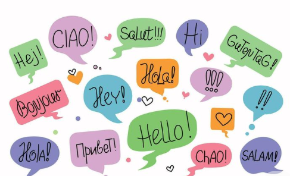
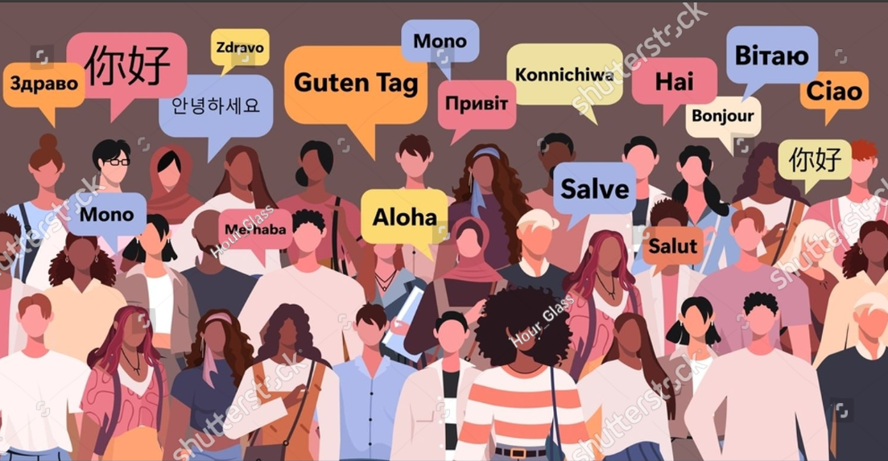
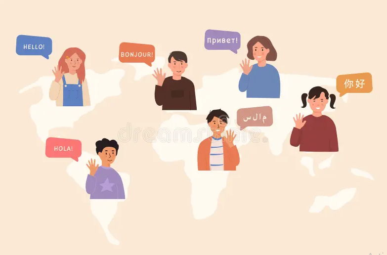

Introducción
Este tema explora los ejes temáticos centrales del programa de inglés en el MCCEMS 2025: identidad personal y cultural, vida cotidiana, relaciones humanas, cuidado del medio ambiente, impacto de la tecnología y problemáticas sociales/globales. Estos temas no son solo vocabulario; sirven para practicar las 4 habilidades lingüísticas en contextos auténticos y relevantes para adolescentes mexicanos, promoviendo reflexión crítica, empatía intercultural y compromiso con la justicia social y la sostenibilidad.
Realidad y representación en medios en inglés
¿Cómo se representa México y América Latina en videos, noticias y redes sociales en inglés? ¿Cómo se muestran temas como migración, cambio climático o desigualdad? Se analizan diferencias entre percepción y realidad, sesgos en medios angloparlantes y la importancia de producir nuestras propias narrativas en inglés.
- Clásico: apariencia vs. realidad en reportajes y documentales en inglés.
- Central: ¿Cómo distinguir información veraz de estereotipos en YouTube, TikTok o Netflix subtitulado?
- Relevancia 2025-2026: desinformación climática, narrativas sobre migración mexicana, representación de jóvenes latinos en series globales.

"Hello" en diferentes idiomas con globos de diálogo → simboliza la identidad cultural y la comunicación global a través del inglés

Multitud alrededor del mundo con globos de saludo en varios idiomas → representa la diversidad cotidiana y los desafíos globales expresados en contextos comunicativos
Identidad y vida cotidiana en contextos globales
¿Quiénes somos cuando hablamos en inglés? ¿Cómo describimos nuestra vida diaria, familia, tradiciones y sueños en otro idioma? El enfoque humanista resalta la dignidad de cada estudiante, el orgullo por la cultura mexicana y la capacidad de dialogar sobre temas personales y colectivos (familia, escuela, redes sociales, aspiraciones laborales, impacto de la tecnología en la identidad).
Dato importante
Estos temas no tienen respuestas únicas; su valor está en la práctica comunicativa que generan: describir, comparar, opinar y escuchar perspectivas diversas en inglés, fortaleciendo autonomía, empatía y conciencia global desde la realidad mexicana.
Desarrollo del Tema
Los temas comunicativos invitan a usar el inglés para reflexionar sobre nosotros mismos y el mundo, integrando vocabulario, gramática y funciones comunicativas de forma natural.
Medio ambiente y sostenibilidad
Ejemplos: describir problemas locales (contaminación en Morelos, deforestación), proponer soluciones (reciclaje, consumo responsable), debatir responsabilidad global usando modales (should, must, could).
Tecnología y sociedad
Redes sociales, inteligencia artificial, privacidad digital, adicción a pantallas: ventajas y riesgos expresados en inglés, con énfasis en pensamiento crítico.
Rebelión ante estereotipos
Usar el inglés para cuestionar narrativas dominantes sobre México y Latinoamérica, contar historias propias y promover representaciones más justas e inclusivas.
Ejemplos Visuales
Ejemplo 1: "Hello" en diferentes idiomas con globos de diálogo → simboliza la identidad cultural y la comunicación global a través del inglés
Ejemplo 2: Multitud alrededor del mundo con globos de saludo en varios idiomas → representa la diversidad cotidiana y los desafíos globales expresados en contextos comunicativos

Ejemplo 3: Niños diciendo saludos en diferentes lenguas → simboliza el orgullo por la identidad mexicana al compartirla en inglés con el mundo
Conclusión
Los temas comunicativos nos ayudan a usar el inglés para comprender mejor quiénes somos y cómo queremos relacionarnos con el mundo, fomentando una ciudadanía activa y consciente.